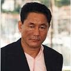
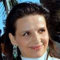
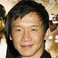
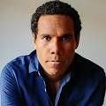
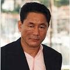
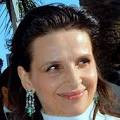
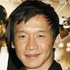
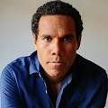

CINE COLOMBIA

Un Japón futurista. Meera (Scarlett Johansson), también conocida como The Major, es la líder de Sección 9, un grupo de trabajo de élite cuyo objetivo es luchar contra el ciberterrorismo y los crímenes tecnológicos. Al mando de esta unidad de operaciones encubiertas está Aramaki (Takeshi Kitano), y destaca Batou (Pilou Asbæk), un exmilitar considerado como uno de los agentes más salvajes del grupo. Pero, después de un peligrosa misión, el cuerpo de Kusanagi ha quedado dañado y, ante la imposibilidad de salvarlo, es sometida a una operación quirúrgica para trasplantar su cerebro en un cuerpo robótico. Este nuevo cuerpo artificial le permitirá ser capaz de realizar hazañas sobrehumanas especialmente requeridas para su trabajo. Entrenada para detener a los criminales y extremistas más peligrosos, The Major se enfrentará a un fanático 'hacker', cuyo único objetivo es acabar con los avances de Hanka Robotic en la tecnología cibernética. Cuando la agente cyborg inicie su búsqueda para encontrar al misterioso informático se verá inmersa en una serie de intrigas políticas y secretos de Estado que la pondrán en peligro y que la harán dudar de todo y hasta de sí misma.
 






